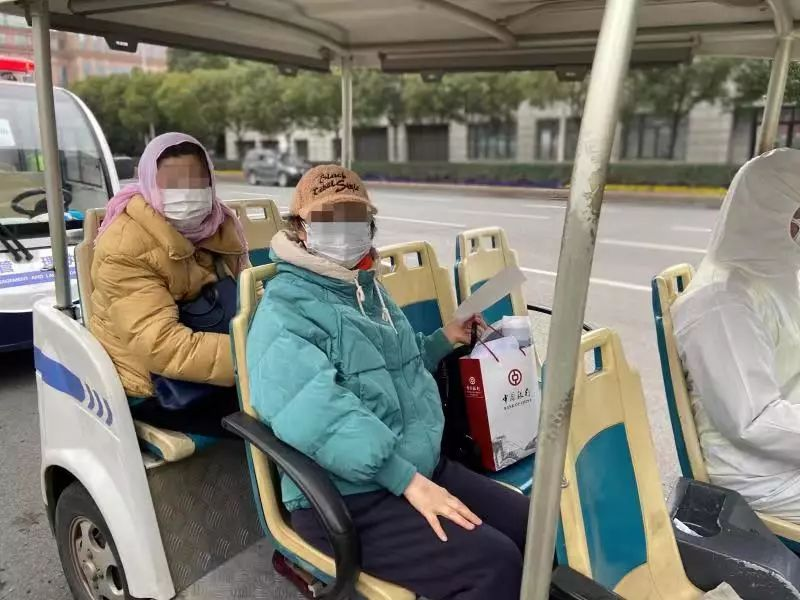
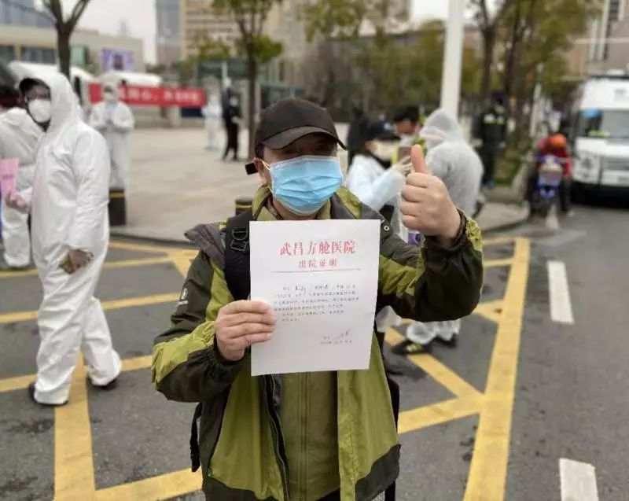

住进方舱医院72小时后，情况明显好转
原文链接 备份链接 武汉紧急改造启用的多个临时性“方舱医院”，承担了此次疫情中数量最大的隔离任务。虽然时间紧任务重，方舱医院的内部运行已经从最初的忙乱走向有序 文 | 《财经》记者 刘以秦 编辑 | 谢丽容 2月6日凌晨3点，在武汉一家 …
澎湃新闻记者 赵思维 廖艳 薛莎莎
2月11日16时许，武汉武昌方舱医院首批28名新冠肺炎患者康复出院。澎湃新闻（www.thepaper.cn）记者现场看到，来自不同街道办和社区的工作人员提前来到等候区，举牌等患者出院，接他们回集中区域隔离14天。
有出院患者称，方舱医院伙食非常好，内部“环境可以”，病人和医护人员还一起唱歌跳舞，放松心情。
也有患者传授康复经验：一要多喝水；二要吃好睡好；三要心态好，要有信心打败病毒。
多名患者均表示，感谢医护人员辛苦的照顾和治疗，他们逆行而上、不怕牺牲的精神值得点赞。
澎湃新闻记者 郑朝渊 赵思维 祝文博 编辑 忻燕 视频来源：澎湃新闻 责任编辑：周宽玮
开辟专门区域，集中隔离14天
武汉方舱医院首批出院的新冠肺炎患者共28人，年龄最大的69岁，主要年龄段在60岁左右。女性患者多于男性患者，男女比例约为1：2。
首批新冠肺炎患者的出院要求，按照国家卫健委发布的《新型冠状病毒感染的肺炎诊疗方案”（试行第五版）》标准，同时达到4个标准，即体温恢复正常3天以上、呼吸道症状明显好转、肺部影像学显示炎症明显吸收、连续两次呼吸道病原核酸检测为阴性（采样时间间隔至少1天）。

街道办和社区工作人员在现场举牌接出院患者。 本文图片均为澎湃新闻记者 赵思维 图
记者看到，为庆祝这批患者康复出院，现场竖起了“出舱了！热烈祝贺武昌方舱医院病友康复出舱”的标牌。
来自不同街道办和社区的工作人员提前来到现场，举牌等候康复出院的患者“回家”。

街道办和社区工作人员接出院患者回集中隔离点。
武汉市武昌区杨园街道办的曹庭满是来接患者的人员之一。他介绍，街道办已经开辟好专门区域，供康复的患者集中隔离观察14天，街道办提供生活必需品，隔离区域也有医护人员照看。此外，隔离区域还设置了运动设施，如：乒乓球台等。

李鑫手持“出院证明”向记者竖起大拇指。
“伙食非常好，组织唱歌跳舞”
刚出院的李鑫（化名）手持“出院证明”，高兴地向记者竖起大拇指。“出院证明”上写着，他今年56岁，于2月6日住进武昌方舱医院。经治疗、专家组会诊确认，符合新冠肺炎患者出院标准，准予出院。出院后，居家隔离14天，不适随诊。
李鑫称，他非常感谢医护人员的无私奉献，他们逆行而上、不怕牺牲的精神值得点赞。
有康复患者介绍，方舱医院伙食非常好，内部“环境可以”，配套设施仍需继续改善，“不能洗澡是最大遗憾”。此外，病人和医护人员还一起唱歌、跳舞，放松心情。

一位患者的“出院证明”。
今年37岁的张灵（化名）于2月6日在武昌方舱医院住院，11日出院。她介绍，她是方舱医院跳广场舞的组织者，她和病人们沟通、协调，约定好时间后，组织大家一起学习舞蹈。有时，医护人员也会和病人一起学着跳。非饭点时，跳舞人数有数十人。
张灵身体恢复得不错，她也乐于把自己的康复经验分享给别人。
“第一要多喝水；第二要吃好睡好，多吃含高蛋白的食物，包括鸡蛋、肉类、虾等；第三要心态好，身体在和病毒战争，要有信心打败它。”张灵说道，“我在外面等大家出来”。
还有患者告诉记者：“出院了，我想把身体养得棒棒的，然后去帮助别人！”面对镜头，她鼓励大家：“病友们加油！一切都会好起来的，医务工作者太好了，感谢他们，武汉加油！”

武昌方舱医院康复出院的患者合影
“医护人员都是战士”
也有出院的患者表示，在方舱医院感受到了医护人员的伟大，“虽然没有拿枪，但他们都是战士”。得知自己核酸检测转阴后，她非常激动，“我能痊愈，真的很感谢医护人员，感谢方舱医院，他们在医疗和生活上都给了我们很大帮助。护士们把一日三餐送到我们面前，我们有什么问题，她们都会尽量解决。”
一位约50多岁的康复患者抑制不住出院的激动心情告诉记者，在来方舱医院前，她在医院住院部治疗，“（身体）一天比一天好了，就这么简单”。约2月6日上午，她转到方舱医院。她称，现在身体很好，最想感谢的是医护人员。
46岁的鲁女士在2月6日住进武昌方舱医院，也是首批出院患者中的一员。鲁女士称，她曾见过一位医护人员身体很虚弱，但仍坚持照顾病人，“这让我非常感动，特别要感谢他们，（如果）没有他们，我不会恢复得这么好。”
住院期间，鲁女士很心疼医护人员，“一站就是一晚上，不喝水，也不上厕所、也不吃东西，我心里很难受，这让我很感动。所以我要早点（康复）出院，为他们减轻些负担。”
“出院后最想做什么？”
“回家洗个澡。”鲁女士笑着说道。
（实习生孟津津、胡友美、夏梦洁、李宁馨、李娴对本文亦有贡献）
本期编辑 常琛
推荐阅读


原文链接 备份链接 武汉紧急改造启用的多个临时性“方舱医院”，承担了此次疫情中数量最大的隔离任务。虽然时间紧任务重，方舱医院的内部运行已经从最初的忙乱走向有序 文 | 《财经》记者 刘以秦 编辑 | 谢丽容 2月6日凌晨3点，在武汉一家 …
原文链接 备份链接 2 月 9 日下午，在被方舱医院「退回」4 天后，刘俊一家被街道居委会通知，当日会安排车辆送其父母入院治疗。 在此之前，经历了数日的网络求助，刘俊一度感到入院无望，特别是在父亲退烧后，几乎接受了无法入院治疗的事实。对于 …
原文链接 备份链接 06.02.2020本文字数：4302，阅读时长大约7.5分钟 导读：一周时间，武汉新增病例5.5倍增长，累计病例增长3.69倍。 作者 | 第一财经 马晓华 胥会云 武汉封城之后，湖北以外的各省份对新型肺炎展开了“ …
原文链接 备份链接 我也是个普通人，也会恐惧。但我是一名医务工作者，同时是一名党员；我们黄冈的疫情是全国城市里除武汉之外最重的几个之一，这样的困难情况下，我们不去，谁去？必须要坚持，一定要挺住。 口述 | 陈 林 整理 | 王 煜 我是湖 …
原文链接 备份链接 文：蔡星卓 “每个人都在拼尽全力呼吸。” 刚开始是发热和咳嗽，接着是明确的呼吸困难，用赵一波的话说，病毒让肺像肿了一样，进而使肺失去了呼吸的功能。有的病人带着面罩，有的病人带着氧气管，有的病人插着 …